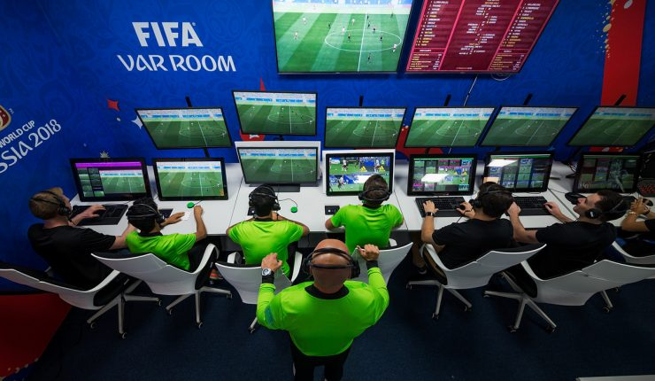

LA "VAR" ou la Video Technology dans le monde du sport
Tout d'abord, la signification de
l'acronyme «VAR» vous est peut-être étrangère. Il vient de l'anglais
«video assistant referee», c'est-à-dire «arbitre assistant vidéo».
Il explique à lui tout seul le principe de ce dispositif: des arbitres
spécialisés, situés dans une salle de régie vidéo, visionnent les
images d'une action litigieuse pour assister l'arbitre principal.
Après
avoir analysé la situation, ils informent l'arbitre par oreillette si
l'action est douteuse. Dans ce cas, l'arbitre principal consulte lui-même
la vidéo de l'action sous tous les angles afin de prendre sa propre décision.
Ce système est mis en place dans le but de diminuer les injustices et erreurs
d'arbitragedans le monde du sport.
La GOAL-LINE TECH
La goal-line technology (ou technologie sur la ligne de but) permet de savoir avec certitude la position d'un objet dans l'espace. Une telle technologie peut être mise en œuvre à l’aide de capteurs placés dans les objets du sport (balle, brassiere, protege,..), sur le lieu de détection (terrain, piste, cage, pannier).
La goal-line technology est essentiellement utilisée pour le football
Elle permet de savoir avec certitude si un ballon de football a franchi ou non la ligne de but.
Cette technologie a été utilisée pour la 1ere fois lors de la Coupe du Monde 2014 : un match oppose
la France et le Honduras. À la 48e minute, une frappe de
Karim Benzema heurte le poteau puis le gardien. Elle est déviée vers le but avant d'en ressortir.
C'est grâce à la goal-line technology que le but a pu être validé sans l'ombre d'un doute.
Salle de régie VAR
Video technology au tennis